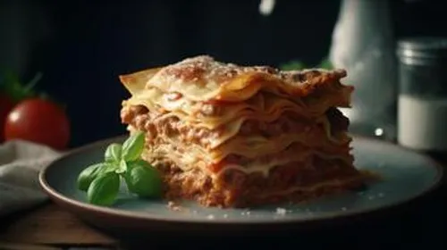

Home
Odin Recipes

Description
Lasagna is a classic Italian dish made of wide, flat pasta sheets layered with rich fillings like meat sauce, cheese, and sometimes vegetables.
It’s known for its hearty, comforting nature, combining savory flavors and creamy textures.
Ingredients
- Lasagna noodles
- Ground beef or Italian sausage
- Marinara sauce
- Ricotta cheese
- Shredded mozzarella cheese
- Grated Parmesan cheese
- 1 egg
- Garlic, onion, salt, pepper, Italian seasoning
Steps
- Cook noodles according to package.
- Brown meat with garlic and onion; drain fat.
- Mix ricotta with egg, salt, pepper, and Italian seasoning.
- Layer in a baking dish: sauce, noodles, ricotta mix, meat, mozzarella, repeat.
- Top with mozzarella and Parmesan.
- Bake at 375°F (190°C) for 45 minutes covered, then 10 minutes uncovered.